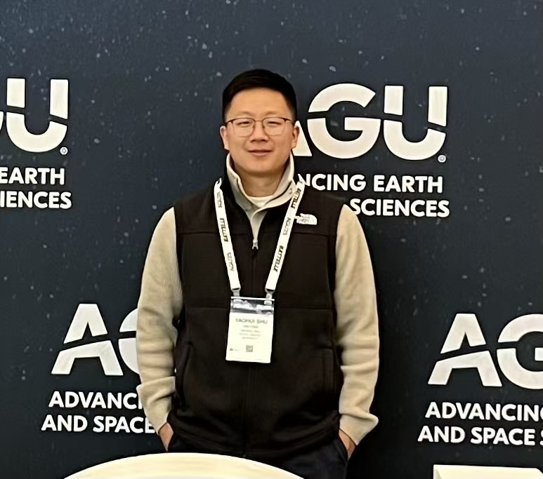

PhD Candidate · Applied Mathematics & Statistics
Uncovering Causal Mechanisms of Aerosol-Cloud-Turbulence Interactions Using Physics- and Data-Driven Methods
Applied mathematician working at the intersection of stochastic theory, information-theoretic causality, and causal machine learning. The focus is on complex, high-dimensional physical systems.

Profile
I am an applied mathematician and PhD candidate at Stony Brook University. I work jointly with Brookhaven National Laboratory. At the core of my research is a single question: in systems where many variables interact simultaneously, what actually causes what? I develop mathematical frameworks rooted in stochastic differential equations, information theory, and causal inference to answer that question rigorously.
My current application domain is aerosol-cloud-turbulence interaction. This system is multiscale, non-Gaussian, nonlinear, and scientifically consequential. I chose it not because I am a domain specialist. I chose it because it is an ideal proving ground for hard mathematical problems. These include deriving exact steady-state solutions to Fokker-Planck equations, closing moment hierarchies for non-Gaussian distributions, and building information-theoretic estimators that correctly distinguish causation from correlation.
The broader ambition is a unified modeling platform. In this platform, physics-informed stochastic models, entropy-based causality diagnostics, and doubly robust causal ML reinforce each other. The goal is a framework that applies to any complex system where understanding mechanism matters as much as prediction.
My background spans applied mathematics, quantitative finance, and scientific computing. I hold an MS in Finance from the University of Rochester and the Certificate in Quantitative Finance (CQF). This cross-disciplinary training gives me a broad toolkit for problems where theory, computation, and data must work together.
Focus Areas
I construct minimal, analytically tractable stochastic models using Langevin equations and Fokker-Planck theory. The goal is to retain only what is essential. From there, I derive exact solutions, moment equations, and steady-state distributions that reveal the underlying physics without numerical black boxes.
I develop time-resolved, ensemble-based estimators grounded in Liang's information-flow formalism. These estimators quantify the direction and magnitude of causal influence between coupled variables. The approach goes beyond correlation and enables falsifiable causal claims from model output.
I extend one-way stochastic systems to bidirectional causal equations that explicitly resolve feedback loops. I also develop Gamma and Weibull moment-closure strategies. These strategies keep high-dimensional distributional dynamics analytically tractable and physically interpretable.
I connect physics-based stochastic models with state-of-the-art causal ML. This includes doubly robust estimators, nonlinear transfer entropy, and graph structure learning. Physics-derived priors guide data-driven discovery. Learned causal graphs in turn refine the stochastic model structure.
Papers
Geophysical Research Letters · AGU
Stochastic Condensation with Information Flow for Causality Analysis
Journal of the Atmospheric Sciences · AGU
A New Stochastic Condensation Model for Investigating Turbulent Entrainment-Mixing Processes
Physical Review E · APS
A Langevin-Type Stochastic Condensation Model Based on the Maximum Entropy Principle
Education & Training
Technical skills
Get in touch
I welcome conversations on stochastic modeling, causal inference, and mathematical methods for complex systems. I am open to academic and applied research collaborations. Feel free to reach out via email or connect on LinkedIn.